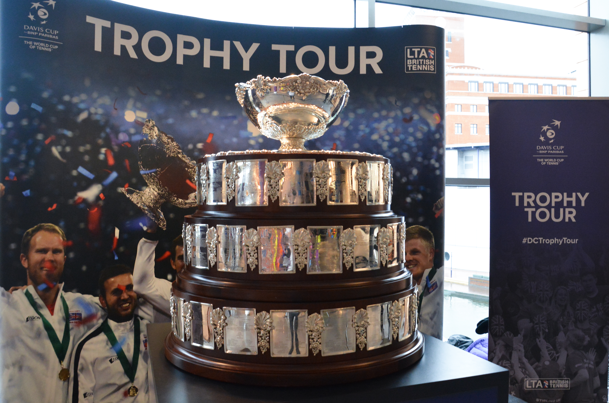

A Copa Davis ocupa um lugar especial no tênis mundial. Diferentemente dos torneios tradicionais, nos quais os atletas disputam títulos individuais, a competição coloca países frente a frente, transformando um esporte marcado por carreiras individuais em uma disputa coletiva, com torcida organizada, rivalidades nacionais e confrontos eliminatórios.
Conhecida internacionalmente como o Mundial de tênis, a Copa Davis reúne seleções de diferentes continentes e níveis competitivos. A conquista representa um dos principais objetivos coletivos da modalidade, enquanto a possibilidade de defender o próprio país acrescenta uma dimensão particular à carreira dos jogadores.
Sua história começou há mais de um século, atravessou diferentes gerações de campeões e acompanhou transformações profundas no esporte. De disputas entre Estados Unidos e Grã-Bretanha até uma competição com mais de 150 nações participantes, a competição construiu uma tradição que permanece relevante no calendário internacional.
O que é a Copa Davis
É a principal competição internacional masculina de tênis por equipes nacionais. Seu objetivo é determinar o país campeão mundial da modalidade por meio de confrontos que envolvem partidas de simples e duplas.
Cada seleção reúne jogadores convocados para representar sua nação. A equipe conta com um capitão responsável pelas decisões técnicas, definição dos atletas e organização dos confrontos.
O resultado coletivo é mais importante do que o desempenho individual isolado. Um jogador pode vencer sua partida, mas sua seleção acabar eliminada caso os companheiros não consigam conquistar os pontos necessários.
Essa característica diferencia a Copa Davis de competições como Australian Open, Roland Garros, Wimbledon e US Open.
Nos torneios de Grand Slam, os atletas representam a si mesmos na busca pelos títulos de simples ou duplas. Na Copa Davis, cada vitória contribui diretamente para a campanha de um país.
A origem do torneio
A história da Copa Davis começou em 1900, quando Estados Unidos e Grã-Bretanha disputaram a primeira edição da competição.
A ideia havia surgido em 1899 entre integrantes da equipe de tênis da Universidade Harvard, nos Estados Unidos, interessados em organizar um confronto internacional contra os britânicos.
Um dos principais responsáveis pela iniciativa foi Dwight Davis, que ajudou a desenvolver o formato original e comprou o troféu com recursos próprios.
A primeira disputa aconteceu no Longwood Cricket Club, em Boston, e terminou com vitória dos norte-americanos.
Inicialmente, o torneio recebeu o nome de International Lawn Tennis Challenge. Com o passar dos anos, passou a ser conhecido como Davis Cup, em homenagem ao responsável pela aquisição da taça.
A expansão foi gradual. Na década de 1920, mais de 20 países já participavam regularmente da competição, que deixou de ser um confronto restrito a duas nações para se transformar em um dos principais eventos do tênis internacional.
O primeiro campeão da Copa Davis
Os Estados Unidos foram os primeiros campeões em 1900, ao derrotarem a Grã-Bretanha por 3 a 0.
A vitória norte-americana marcou o início da história da competição, que ainda era conhecida como International Lawn Tennis Challenge.
O primeiro título também inaugurou uma trajetória de protagonismo dos Estados Unidos, país que se tornaria o maior campeão da história da Copa Davis.
A Itália é a atual campeã. A seleção italiana conquistou a edição de 2025 ao derrotar a Espanha por 2 a 0 na final, disputada em Bolonha, na Itália.
Foi o terceiro título consecutivo dos italianos, que também haviam levantado a taça em 2023 e 2024. Com a conquista, a Itália chegou ao quarto título de sua história na competição.
A Copa Davis é disputada anualmente, ou seja, diferentemente de competições como por exemplo a Copa do Mundo de futebol, realizada de quatro em quatro anos.
O calendário é dividido em diferentes períodos da temporada, com confrontos classificatórios, disputas entre seleções de diferentes divisões e uma fase final que determina o campeão mundial.
O funcionamento do torneio
A Copa Davis passou por diversas mudanças de regulamento ao longo de sua história. O formato foi modernizado para acomodar o crescimento do torneio e facilitar a participação dos principais jogadores do circuito profissional.
Na estrutura adotada em 2026, a competição está organizada em diferentes níveis, permitindo que seleções disputem tanto o título mundial quanto o acesso às divisões superiores.
Os principais níveis são:
- Davis Cup Finals: etapa decisiva que determina o campeão mundial.
- Qualifiers: confrontos classificatórios que definem os países participantes da fase final.
- Grupo Mundial I: reúne seleções que buscam acesso às eliminatórias principais.
- Grupo Mundial II: divisão que integra o sistema de acesso e rebaixamento.
- Grupos regionais III, IV e V: níveis que permitem a participação de seleções de diferentes regiões do mundo.
O caminho de uma seleção depende de sua posição no sistema competitivo e dos resultados conquistados nos confrontos anteriores.
Dessa maneira, países que não integram a elite podem subir progressivamente até conquistar uma vaga nas eliminatórias que dão acesso à fase final.
Como são disputados os confrontos
Nas eliminatórias com mando de quadra, os encontros entre duas seleções são organizados em até cinco partidas, distribuídas por dois dias.
A programação tradicional dessa estrutura funciona da seguinte maneira:
Primeiro dia:
- Primeira partida de simples.
- Segunda partida de simples.
Segundo dia:
- Partida de duplas.
- Terceira partida de simples.
- Quarta partida de simples, caso necessária.
A seleção que conquistar três vitórias garante o confronto.
Na fase final concentrada em uma única sede, a disputa é mais curta. Cada encontro tem até três partidas: duas de simples e uma de duplas. O primeiro país a vencer duas partidas assegura a classificação.
As partidas seguem o formato de melhor de três sets, com tie-break. Portanto, é necessário vencer dois sets para ganhar um jogo.
A presença das duplas acrescenta um elemento importante ao torneio. Uma seleção pode contar com tenistas fortes individualmente, mas precisar de uma parceria eficiente para decidir um confronto equilibrado.
Nos confrontos classificatórios disputados com mando de quadra, a seleção anfitriã tem o direito de escolher a superfície, saibro, quadra dura ou grama e as bolas utilizadas. A decisão pode representar uma vantagem estratégica, já que diferentes pisos favorecem características específicas dos jogadores.
O que torna diferente de outras competições
A principal diferença está no espírito coletivo.
Embora o tênis seja uma modalidade predominantemente individual, a Copa Davis exige que jogadores e capitães trabalhem juntos durante toda a competição.
O atleta precisa lidar com a pressão de representar sua seleção, enquanto o capitão define quais tenistas apresentam as melhores características para cada confronto.
O desempenho nas duplas, a adaptação à superfície e a capacidade de enfrentar adversários de diferentes estilos podem fazer a diferença.
Outro elemento marcante é a atmosfera das arquibancadas. Em encontros realizados com mando de uma das seleções, o apoio da torcida transforma o ambiente competitivo.
O saibro, a grama e as quadras duras também podem influenciar o desenvolvimento das partidas, pois favorecem diferentes estilos de jogo.
Por isso, uma seleção não depende exclusivamente de ter o jogador mais bem colocado no ranking mundial. A composição do elenco, as características técnicas e o rendimento coletivo são igualmente relevantes.
Os países com mais títulos da Copa Davis
A história foi construída por seleções tradicionais que atravessaram diferentes gerações de grandes jogadores.
As conquistas registradas até a edição de 2025, os maiores campeões são:
- Estados Unidos — 32 títulos.
- Austrália — 28 títulos.
- França — 10 títulos.
- Grã-Bretanha — 10 títulos.
- Suécia — 7 títulos.
- Espanha — 6 títulos.
- Itália — 4 títulos.
- Alemanha — 3 títulos.
- República Tcheca — 3 títulos.
- Rússia — 3 títulos.
A República Tcheca tem em seu histórico a conquista de 1980, obtida pela antiga Tchecoslováquia. A contagem da Rússia inclui o título de 2021, conquistado sob a denominação Federação Russa de Tênis.
A Austrália construiu grande parte de sua tradição durante o século XX, período em que contou com nomes históricos como Rod Laver e Roy Emerson.
Os Estados Unidos também estabeleceram uma longa relação com o torneio, reunindo gerações de tenistas que participaram diretamente da consolidação internacional da competição.
A França teve um período especialmente marcante entre 1927 e 1932, quando conquistou seis títulos consecutivos com uma geração que ficou conhecida como os Quatro Mosqueteiros: Jean Borotra, Jacques Brugnon, Henri Cochet e René Lacoste.
Entre as conquistas mais recentes, a Itália levantou a taça em 2023, 2024 e 2025, completando três títulos consecutivos e chegando ao quarto troféu de sua história.
Grandes jogadores que marcaram a competição
A Copa Davis teve participação de alguns dos principais tenistas de todos os tempos.
Entre os nomes que defenderam suas seleções estão Rod Laver, Björn Borg, John McEnroe, Andre Agassi, Pete Sampras, Roger Federer, Rafael Nadal, Novak Djokovic e Andy Murray.
Cada geração contribuiu para fortalecer a tradição da competição.
Roger Federer participou da conquista inédita da Suíça em 2014, quando os suíços derrotaram a França por 3 a 1 na decisão.
O título se tornou outro capítulo importante da história de Roger Federer e seu legado no tênis mundial.
Rafael Nadal também teve participação importante na trajetória espanhola, incluindo o título de 2019, conquistado diante do Canadá.
A relação entre a competição e o tenista espanhol faz parte da carreira de Rafael Nadal e de suas conquistas históricas no tênis.
Outro exemplo é Novak Djokovic, integrante da seleção sérvia campeã em 2010.
Essas participações ajudam a explicar por que a Copa Davis possui um significado particular mesmo para atletas acostumados a disputar as maiores finais do circuito profissional.
Já o Brasil nunca conquistou o título, mas possui uma história relevante na competição.
A seleção brasileira participou de diferentes gerações do torneio e teve suas campanhas mais marcantes no Grupo Mundial em 1992 e 2000, quando alcançou as semifinais.
Em 1992, o Brasil chegou à semifinal depois de eliminar a Itália nas quartas de final. A campanha terminou diante da Suíça, que posteriormente disputaria a decisão contra os Estados Unidos.
Oito anos depois, a seleção brasileira voltou a alcançar a mesma fase, desta vez com Gustavo Kuerten como principal referência individual.
A campanha de 2000 terminou com derrota para a Austrália, em Brisbane, em confronto disputado na grama.
Outros nomes que contribuíram para a trajetória nacional incluem Thomaz Koch, José Edison Mandarino, Carlos Kirmayr, Luiz Mattar, Jaime Oncins, Marcelo Melo e Bruno Soares.
A presença de especialistas em duplas e jogadores experientes em confrontos internacionais também representa uma característica importante da tradição brasileira.
A diferença entre Copa Davis e Billie Jean King Cup
São as principais competições internacionais de tênis entre seleções masculinas e femininas, respectivamente. Enquanto a Copa Davis reúne os homens, a Billie Jean King Cup é considerada a Copa do Mundo feminina de tênis.
Criada em 1963, a competição feminina surgiu com o nome Federation Cup e teve sua primeira edição disputada no Queen's Club, em Londres. Os Estados Unidos foram os primeiros campeões, derrotando a Austrália na decisão. Em 1995, o torneio passou a se chamar Fed Cup e, em 2020, recebeu o nome Billie Jean King Cup, em homenagem à ex-tenista norte-americana, uma das maiores figuras da história da modalidade e pioneira na luta pela igualdade de oportunidades e premiações no esporte.
Assim como a Copa Davis, a Billie Jean King Cup acontece anualmente e reúne seleções de diferentes continentes em confrontos de simples e duplas. O torneio possui fases classificatórias, divisões regionais e uma etapa final que determina a seleção campeã mundial. Na edição de 2026, a competição registrou a inscrição de 148 países, demonstrando sua dimensão internacional.
O Brasil também participa da Billie Jean King Cup, representado por sua seleção feminina. Ao longo da história, nomes como Maria Esther Bueno, Bia Haddad Maia e Laura Pigossi fizeram parte da trajetória brasileira na competição.
As duas competições compartilham o mesmo princípio: transformar um esporte predominantemente individual em uma disputa coletiva, na qual cada vitória contribui para a campanha de uma seleção nacional.
O legado da Copa Davis no tênis mundial
A importância da Copa Davis vai além da relação de países campeões.
Desde sua criação, a competição aproximou diferentes escolas de tênis, levou confrontos internacionais a novas regiões e criou oportunidades para que jogadores defendessem suas seleções diante de grandes adversários.
Sua evolução também reflete as transformações do esporte. O calendário profissional cresceu, as exigências físicas aumentaram e o formato precisou se adaptar a uma modalidade cada vez mais internacionalizada.
Mesmo com essas mudanças, o princípio que deu origem ao torneio permanece: países competindo entre si por uma conquista coletiva.
Para as seleções tradicionais, a Copa Davis representa a continuidade de uma história construída por diferentes gerações. Para nações que ainda procuram seu primeiro título, significa a possibilidade de alcançar um resultado capaz de transformar o espaço do tênis em seu país.
É justamente essa combinação de história, rivalidade, identidade nacional e competição de alto nível que mantém a Copa Davis como uma das conquistas mais representativas do tênis mundial.